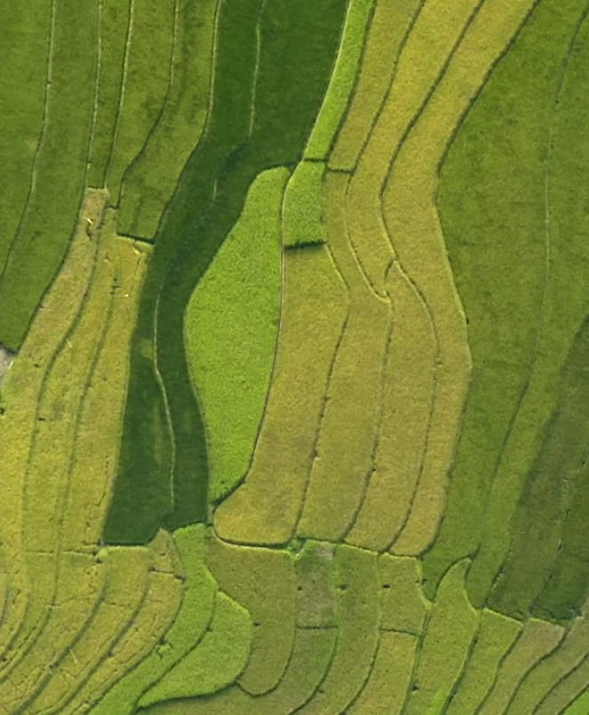

FarmerChat: Delivering Personalized Farm Advice to 1.6 Million Farmers Across Five Countries

FarmerChat is an AI assistant built to help smallholder farmers make better field-level decisions by delivering timely, localized advice to help them grow more, earn more, and adapt to changing weather. It is designed for low-connectivity areas and available in over 15 languages including Swahili, Portuguese, Spanish, Hindi, Telugu, Amharic, Hausa, and English.
Data characteristics
The FarmerChat system draws from an agronomic content corpus that powers FarmerChat's advisory responses — curated from ICAR, national extension services, and field-validated crop guidance across India, Kenya, Ethiopia, Nigeria, and Brazil. This content is organized by crop, geography, and query type, enabling the system to return locally grounded answers rather than generic advice.
Key characteristics: multilingual (15 languages), multi-country (5 geographies), low-bandwidth optimized, and continuously updated through fine-tuning and RLHF loops informed by farmer feedback and agronomist review. Query volume has reached 9 million across 1.6 million farmers, providing a rare at-scale signal on what smallholder farmers actually ask and what advice they act on.
Responsible AI: FarmerChat's content pipeline includes human agronomist review before deployment in any new crop or geography. Outputs are grounded in verified extension material to reduce hallucination risk. Digital Green has invested in RLHF infrastructure to surface low-quality responses for expert correction.
Model characteristics
Multiple models are available based on the shared data. Please refer to the GitHub repository.
How to use
FarmerChat can be engaged at four levels depending on your organization's technical capacity, timeline, and deployment goals.
Open Build Partner: Technically equipped organizations can build independently on Digital Green's public infrastructure. The full codebase is available at github.com/digitalgreenorg/DG_Open (Apache 2.0) and datasets are on GitHub and Hugging Face. Digital Green publishes and maintains the open source foundation; the partner owns everything from development through deployment.
Community Partner: For organizations ready to launch quickly without requiring Digital Green staff time. Digital Green provides and maintains the FarmerChat platform at no cost, along with an onboarding toolkit, co-brandable campaign templates, and remote training support. The partner leads all in-country training and farmer outreach.
Custom Partnership: For organizations that want Digital Green staff actively involved in their deployment. Depending on scope, this can range from research-grade validation — where Digital Green contributes expert agronomic content review, M&E frameworks, and pre-built analytics dashboards — through to full co-implementation, where Digital Green dedicates product and engineering staff to customize across various features of localization and the tech stack.
To get started, organizations should reach out to Digital Green to find the partnership tier that best suits their needs.
Basic eligibility: farmers should be reachable in a language FarmerChat supports (including English, Hindi, Telugu, Amharic, Kiswahili, Hausa, Portuguese, Spanish, and others), have access to an Android smartphone directly or via a shared-device model, and the project should have a credible distribution path through an extension network, cooperative, government department, or telecom partnership.
Datasets
Use cases
Additional resources
About
Powered by / Provided by: Digital Green
Catalyzed by: Digital Green, in parts by FAIR Forward - AI for All (https://www.bmz-digital.global/en/overview-of-initiatives/fair-forward/), GIZ
Financed by: Multiple Funders, among them: The Rockefeller Foundation, Gates Foundation, BMZ (https://www.bmz-digital.global/en/digital-transformation-and-development-cooperation/) and Sequoia Climate Fund, CISCO Foundation
Authors: Philipp Olbrich, Balthas Seibold
Contact: Digital Green (contact@digitalgreen.org)